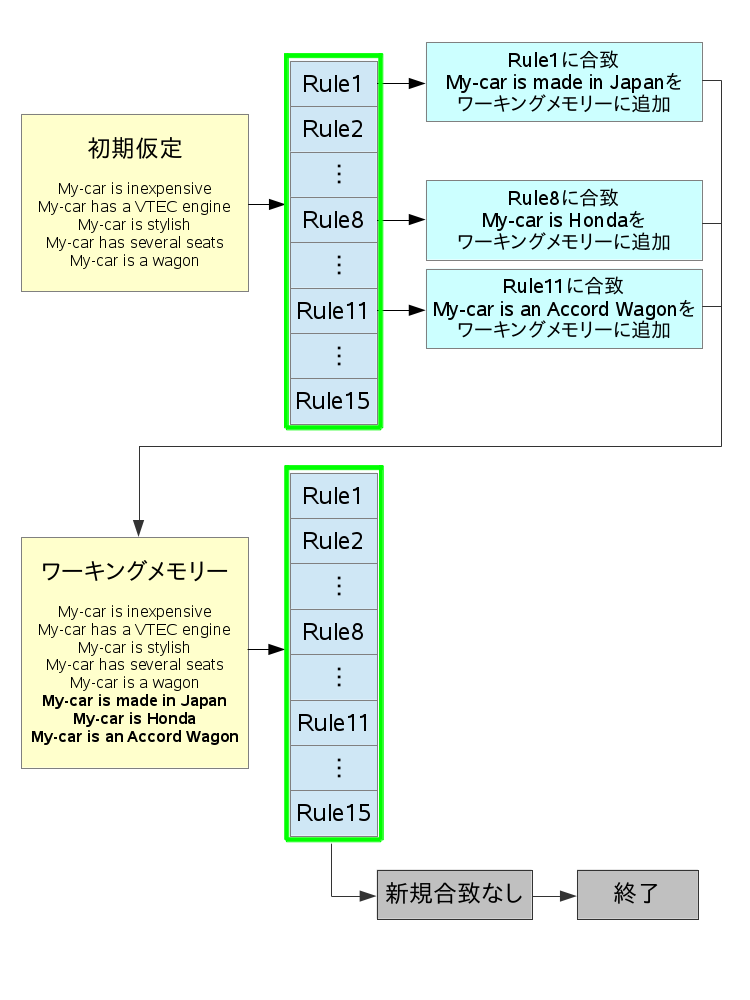
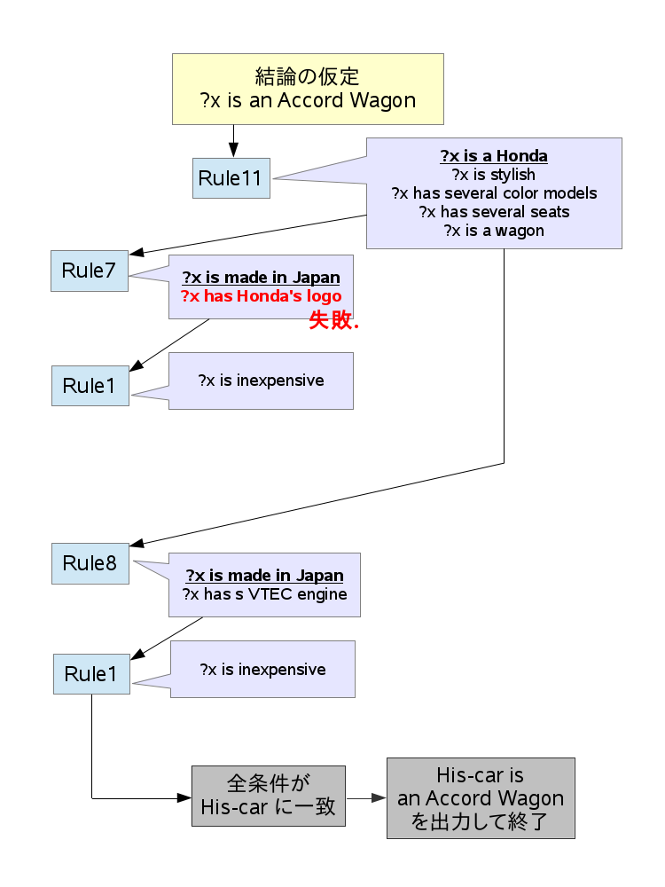

前向き推論は、最初に与えられた仮定群を元にruleを読み出しif条件にマッチすれば新しいアサーションを仮定群に追加していき、全てのruleを一通り読み出し終えたら最初の仮定群とrule条件にマッチしたことで新しく作成されたアサーションをワーキングメモリーに書き出す。 この一連の流れを新しいアサーションが生成されなくなるまで繰り返すことで、ワーキングメモリーに必要な応答が書き出される。
後ろ向き推論は、ある結論の仮定が先に与えられ、それが成立するためのruleを繰り返し読み出して後件と事実とのマッチを検討する。必要なルールを呼びだし終えたとき、最初の仮定に対しての応答が与えられる。
前向き推論は、与えられた条件に合致すれば新しい情報を得ることができ、またそれを元にして新しい情報を次々に得ていくという意味で人間の行う推論方法に近く、感覚的に捉えやすい。 ルールの設定に関しては上から順番に全てのルールを読み出していくので、確実性がある。ただし、プログラムの性質上最終的に書き出されるのは一つの応答ではなくワーキングメモリーの情報群となり、必要な情報が書き出されているかどうかは人間が確認する必要がある。
後ろ向き推論は、最初に与えられた結論が正しいかどうかをルールを用いて補強していく、人間が普段用いないコンピュータ的な推論方法といえる。 ルールの設定に関しては、与えられた仮定を満たすために必要なルールを逐次読み出す。そのルールの中に、直接の条件として与えられてはいないがそのルールを満たすためのルールが存在していればそれも読み出していく。しかし、このようなルールの入れ子を辿る途中で満たすことのできない条件に当たってしまった場合、そこまでの探索は無意味なものとなってしまい、また最初に戻って必要なルールを再検索するという挙動をするため、もしルールがもっと多く網目状に入り組んでいるような場合、計算時間の安定性に欠けるように感じた。 反面、探索に成功し全ての条件が一致した場合、プログラムの最後には応答が一つだけ書き出され、簡潔で分かりやすい。 どちらも一長一短であることが理解できた。